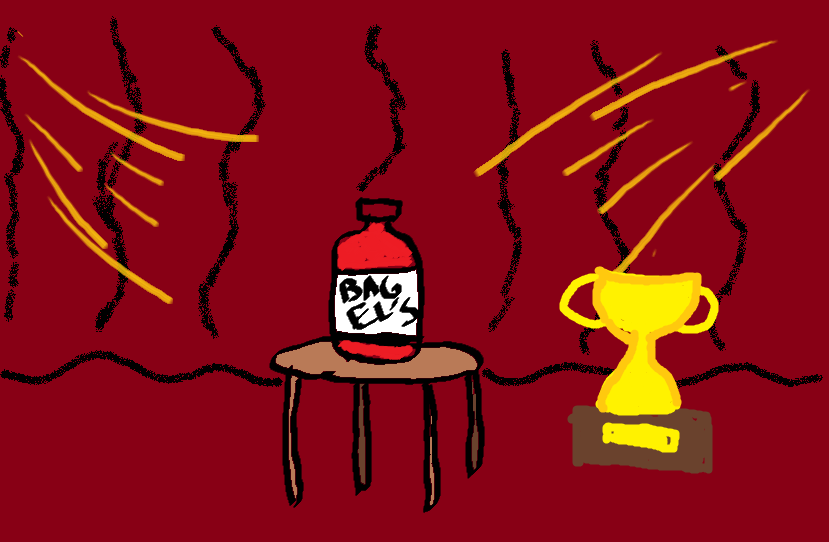
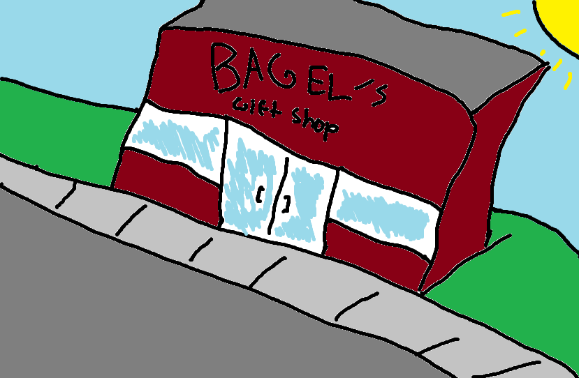

News
Bagel's Dragon's Venom Wins Award for "Most Dangerous BBQ Sauce"

The ARA has given Bagel's famous and possibly infamous sauce, Dragon's Venom, the 2019 award for "Most Dangerous BBQ Sauce." The sauce is notorious for to this point having none survive consumption of the sauce. This really should be illegal, but we got an award for it so it must be fine.
Boy Becomes First to Survive Consumption of Bagel's Dragon's Venom Sauce
11 year old Rakim Salim became the first human to survive after consumption of the notorious Bagel's Dragon's Venom sauce, just after the award was given to the sauce for being the "Most Dangerous BBQ Sauce." Brock surprisingly only lost consciousness for 25 minutes after taking a bite from a chicken leg with the sauce on it.
Bagel's First Gift Shop Opens Today!

Bagel's BBQ Sauce has opened up their first gift shop as of today! The first 20 customers received a complimentary bottle of Honey Mustard Sauce, and the first 5 also received a miniature bottle of Dragon's Venom, probably for souvenir rather than consumption. The store features T-Shirts, stuffed animals, blankets, and of course, the special Bagel's Sauces.
Bagel's breaks records for longest BBQ
At the Craven Science Festival, Bagel's was able to cook 2,000 Hot Dogs, 500 pieces of chicken, and smoke over 300 ribs. The barbecue lasted over 95hrs.